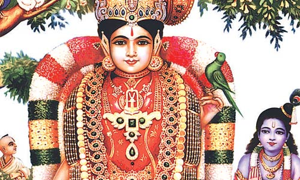

Andal or Kodhadevi is the only female Alvar among the 12 Alvar saints of South India.
The Alvar saints are known for their affiliation to the Srivaishnava tradition of Hinduism.
Andal is credited with the great Tamil works, Thiruppavai and Nachiar Tirumozhi,
which are recited by devotees during the winter festival season of Margazhi.
(Andal Birth near Thulasi Plant)
BIRTH STORY:
A great vedic scholar, poet, Vishnu devotee also known as Periyazhvar found the divine child under a
tulasi plant while he was tending his nandavanam(garden) in Srivilliputhur.
He brought her up in simple and godly surroundings natural to a pious, vedic, dhwaija.
The child prodigy thus fostered lovingly grew into a beautiful maiden and became an embodiment of love for Sri Krishna.
Being a devotee of "Sri Vadabhatrasayee", the presiding deity of Srivilliputhur,
Vishnuchitha would weave a garland of tulasi leaves daily and keep it sacredly rolled in a flower basket so that he may,
after attending to his other course, take the garland later to the temple for offering to the lord.
(Vadapathrasayee Temple)
On a particular day, when the garland was handed over by Vishnuchittar to the priest for decorating the Lord,
there was a strand of human hair sticking to the flowers. On seeing this, the priest got furious and chided Vishnuchittar.
What a grave offence this is! he said.
How come there is a hair in the garland? Do you not know that only the purest of things are offered to the Lord?
Take this back! Saying thus, he flung the garland back into the hands of Vishnuchittar who was trembling with shame and embarrassment.
He could not figure out how a hair could have got into the garland when he was taking so much care to weave the garland.
With a heavy heart, he walked back to his home, mentally tired with the shock and shame he had faced in the temple.
That night, Vishnuchittar could not sleep. He could not figure out wherefrom a long hair could attach itself to this
garland he made with so much of devotion and care. His questions had no answer and he spent the night with not a wink.
In the morning, as usual he collected the flowers and made them into a beautiful garland. That day too, he left the garland
and went out but came back almost immediately when the sight he saw shocked him.
The little Kothai was wearing the garland and admiring her beauty in the mirror.
Blasphemy! he cried out aloud, much to the shock of the little girl who was taken aback on seeing her father see her wearing the garland.
Blasphemy! What can I do now? Vishnuchittar lamented beating himself on his forehead.
I have committed a grave sin! There is no recourse for me! Narayana! Narayana!
The little girl unable to watch her father lament thus started to cry.
Vishnuchittar was in no mood to pacify her.
He threw away the garland and went and plucked flowers again and made a garland and left for the temple immediately.
That night Lord Narayana appeared in the dream of Vishnuchittar. Why have you discarded the garland worn by Kothai? demanded he.
I will henceforth wear only the garland worn by her as it contains the scent of her pure devotion.
Please do as I wish! As the Lord disappeared, Vishnuchittar got up with a start,
realising that his daughter was no ordinary being but the incarnation of the Goddess.
He was overwhelmed, and from that day, the garland for the Lord was first worn by Kothai.
She became to be known as Andal or one who ruled the Lord. She was also known as Choodi Kodutha Sudarkodi.
As she grew up, Vishnuchittar was worried about her marriage and that he should find a good groom for her.
Andal, on the other hand had her mind transfixed on Lord Krishna who was Narayana himself, whom only she saw as her bridegroom.
No mortal will I marry! she said much to the surprise of all.
I will marry only Lord Krishna! She meditated upon the Lord, praying to him every day.
Every morning in the month of Margazhi, she would wake her friends up and after having a bath in the cold waters,
go about singing the praise of Lord Krishna through hymns known as Tiruppavai which was composed by her.
She urged the other friends of hers also to pray to the Lord Krishna in the month of Margazhi.
Vishnuchittar was getting more and more worried about the future of Kothai.
One day, Lord Ranganatha whose abode is Srirangam, appeared in the dream of Vishnuchittar and expressed his desire to marry Kothai.
He instructed Vishnuchittar to bring Kothai to Srirangam bedecked as a bride where He would accept her as his wife.
Vishnuchittar, who was elated, at this dream of his, conveyed this to his patron and friend King Vallabha Deva Pandya
who made all arrangements for Kothai to be brought in a palanquin bedecked in all bridal finery,
accompanied by an array of elephants and horses which was a symbol of status, along with lot of gifts for the Lord.
ANDAL'S PARROT:
Thiruvillipuththur Andal's hand-crafted parrot is made with fresh green leaves each and every day.
This parrot is kept in the left hand of Andal. It takes approximately four and half hours to make this parrot.
A pomegranate flower for beak and mouth, Bamboo sticks for legs, banana plant, petals of pink oleander and Nandiyavattai are used to prepare this parrot.
(SriVilliputhur Temple)
FESTIVALS:
Thousands of people from the state participate in the "Aadi Pooram" festival celebrated in the Andal Temple.
After early morning special pujas, the presiding deities, Shri Rengamannar and Goddess Andal are taken in decorated palanquins to the car.
The festival marks the adoption of presiding deity, Andal, by Periyazhwar after he found her near a
Tulsi plant in the garden of Vadabadrasai Temple at Thiruvilliputhur on the eighth day of the Tamil month of Adi.
ANDAL'S GARLANDS:
The Ranganatha of Thiruvarangam Ranganathaswamy temple married Andal, who later merged with the idol.
ANDAL GARLAND AND TIRUPATI VENKATESWARA:
For Tirupati Brahmotsavam, garlands worn to Andal in Srivilliputhur temple are sent to Venkateswara Temple at Tirupati in Andhra Pradesh.
These traditional garlands are made of tulasi, sevanthi and sampangi flowers.
These garlands are worn to Lord Venkateswara during Garuda seva procession.
Every year Tirupati Venkateswara’s garland is sent to Srivilliputtur Andal for marriage festival of Andal.
KALLAZHAGAR
Andal garland is being sent to Madurai Kallazhagar for Chithirai Festival day.
LITERARY WORKS:
THIRUPPAVAI:
Her first work is the Thiruppavai, a collection of 30 verses in which Andal imagines herself to be a Gopi,
one of the cowherd girls known for their unconditional devotion to Lord Krishna.
In these verses, she describes her yearning to serve Lord Vishnu and achieve happiness not just in this lifetime, but for all eternity.
She also describes the religious vows (pavai) that she and her fellow cowherd girls will observe for this purpose.
It is said that Thiruppavai is the nectar of Vedas and teaches philosophical values, moral values, ethical values,
pure love, devotion, dedication, single-minded aim, virtues, and the ultimate goal of life.
NACHIAR TIRUMOZHI:
The second work by Andal is the Nachiar Tirumozhi, a poem of 143 verses.
"Thirumozhi" literally means "Sacred Sayings" in a Tamil poetic style and "Nachiar" means Goddess.
Therefore, the title means "Sacred Sayings of the Goddess." This poem fully reveals Andal's intense longing for Vishnu, the Divine Beloved.
Utilizing classical Tamil poetic conventions and interspersing stories from the Vedas and Puranas,
Andal creates imagery that is possibly unparalleled in the whole gamut of Indian religious literature.

MANGALASASANAM:
Andal has sung in praise of eleven holy sites.
Sri Ranganathaswamy Temple - Srirangam, Paramapadam,
Tirupathi,
Thiruparkadal,
Govardana,
Dwarka,
Kallazhagar temple,
Sarangapani temple,
Neelamegha Perumal temple,
Srivilliputhur Andal Temple,
Thiruvaipadi.
PERIYAZHWAR'S BHAKTHI:
Periyazhwar felt old suddenly for having lost the child.
With the help of the king, he consecrated an andal deity in Sri Villiputthoor and
till last day he was doing his usual kanikaryam of Maalai to Sri vadabhathrasayee but with a heavy heart thinking of kodhai always.
The one which removes all our sins and shows the feet of The Lord; Equal to all Vedas and even the essence of all Vedas;
they are the THIRTY verses of Thiruppavai sung by Kodhai; and if one does not know that, he (or she) is a burden to the earth
- Oh my dearest sisters and brothers, Please make it a point to recite these excellent 30 verses every morning and be blessed by Sri Andal,
who is none other than Bhoomi Piratti and can only save us from our samsaaric afflictions.

 (Vadapathrasayee Temple)
(Vadapathrasayee Temple)